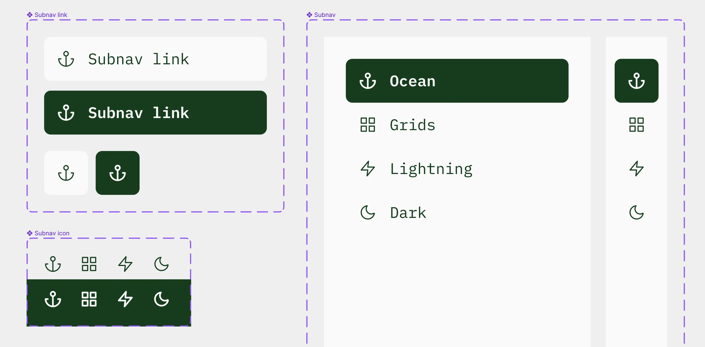
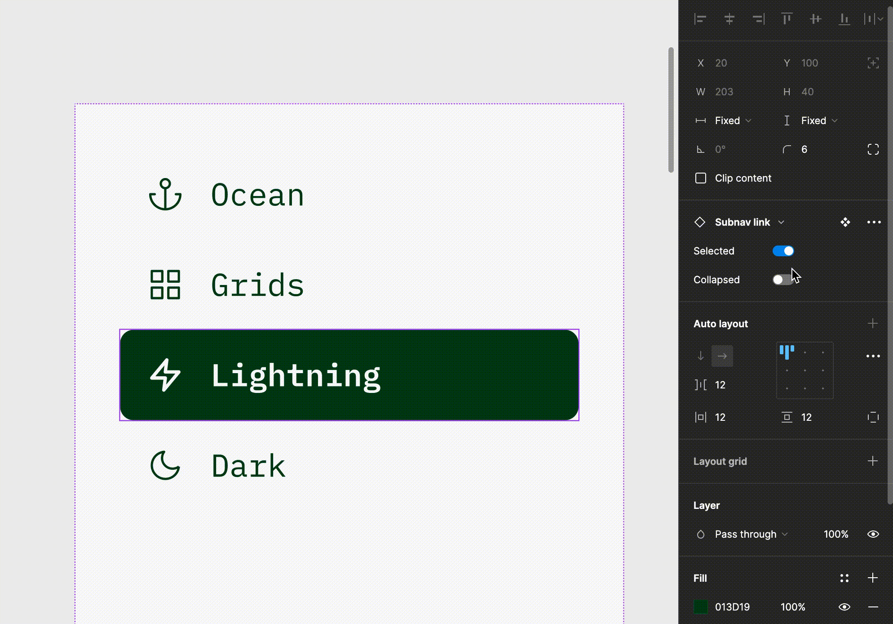

my summer of creative mini-projects
overview
This is a collection of my mini-projects from the summer of 2022. Most have been done in roughly 1 week or less, and all were done in Figma unless otherwise stated.
The work below is strictly for fun and learning about areas of design I've (sometimes suddenly) become intensely curious about. If you want to see "serious" UX and product design case studies, take a look at my work revamping the onboarding experience of a mobile app or designing a city government web portal.
practicing atomic design
OK, I'm sorry—this one isn't technically a mini-project. It was part of a task I did during my internship at Postlight. But I took the opportunity to apply a principle I've been really interested in recently, so it felt appropriate to include.
Here was the problem: my team was designing a dashboard and using the same side navigation bar over and over. It was time to make it a component. I took note of where we required variability: collapsed vs. expanded versions; different icons for each nav link; background fill color for selected vs. unselected links.
What I could have done (and would have in the past), is create a component set with 8 variants: 4 of the side nav's expanded version, one for each state with a different nav link selected, and the same for the collapsed version. But this is essentially hard-coding the solution, and it'd be pretty tedious later on if, say, I wanted to change the icons.
Instead, I focused on making the atoms and molecules of the nav bar variable. The icons are variants of one component set; the links another; these are then nested within a high-level component set of the collapsed and expanded nav bar variants.

(Note: This was for a client project. I've changed content and all visual styling to keep the real work private.)
playing with ui: style tile sandboxes
I learned about style tiles, a design artifact somewhere between mood boards and mockups, during my summer internship. The designers at my agency used them to define a new project's UI direction, and I saw them as a cool early ancestor to a design system. I've ever since been playing around with style tiles by choosing an app at random and giving myself free rein to imagine (using any information I have about the app, its users, and what it does) how I might design its UI.
optimizing components for variation
This project was my opportunity to explore 2 recent interests: design systems and Figma auto-layout. Picking The A11y Project's website to use as a guide, I recreated (and documented) many of their web UI components in Figma, trying to test the capabilities of auto-layout for enabling easy resizing and future scalability.

exploring microinteractions
I remember reading, when I first got seriously into design, an article that a Spotify team wrote about animating the Spotify heart button. This summer at my internship, I was learning to prototype with Protopie and decided to try creating basic microinterations with the tool. Of course, I used Spotify heart-esque elements as my test subjects. The results are far less sophisticated and cool than the real things, but it was a fun experience nevertheless.
vectorizing blackletter type
Curious about typography and how icon designers manage to simplify extremely complex shapes, I tried vectorizing the Blackletter masthead logos of news organizations.
Back to homepage